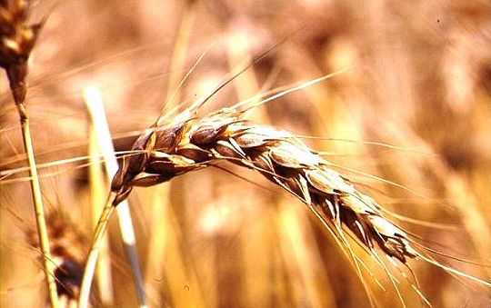

Carissimi Genitori,
a partire dal mese di ottobre troverete nel nostro sito una rubrica dedicata al tema formativo dell’anno: “Educhiamo con il cuore di Don Bosco”.
Sarà il IX Successore di Don Bosco, Don Pascual Chavez, a guidarci con una riflessione che viene pubblicata nell’editoriale del Bollettino Salesiano, la rivista fondata da D. Bosco.
Nei prossimi mesi provvederemo per farvi recapitare mensilmente questo strumento di formazione salesiana. E’ l’omaggio che Don Bosco fa a quanti si dedicano all’educazione e frequentano un’opera salesiana. Vi sarà molto utile per il vostro prezioso ed insostituibile compito educativo.
Auguri di ogni bene.
Don Antonio Sanna, direttore
LA STORIA DEL SEME
“Se il chicco di frumento caduto in terra non muore,
rimane solo, se invece muore, porta molto frutto” (Gv 12,24)
La vita è in assoluto il dono più prezioso tanto che quasi per istinto l’uomo cerca con tutti i mezzi di conservarla. Tuttavia la vita non è qualitativamente significativa finché non si scopre il suo senso e non si trova la risposta alle domande esistenziali: chi siamo, da dove veniamo, verso dove camminiamo, che cosa è la vita, che cosa è la morte, chi è Dio, chi è l’uomo. In buona misura si può affermare che tutta la storia umana altro non è che lo sforzo per vincere tutto ciò che può costituire una minaccia: la vulnerabilità davanti alla forza scatenate della natura, la malattia, la povertà, lo sfruttamento, la sopraffazione, l’emarginazione e, soprattutto, la morte. E si deve essere fieri e riconoscenti dei traguardi che l’umanità ha raggiunto a livello scientifico e tecnologico ma anche a livello di consapevolezza, per rendere più umana la vita dell’uomo e della donna sulla terra. Questo spiega come la gente abbia preso coscienza, come non mai, del valore e della dignità della vita, anche se occorre subito aggiungere che purtroppo oggi vige una vera cultura di morte che trova le sue espressioni più crudeli e drammatiche nella guerra, nell’ingiustizia, nella violenza, nel degrado della natura.
UNA SFIDA CONTINUA
Molto si è progredito nella ricerca scientifica volta a sconfiggere le malattie e prolungare la vita umana, fruendo di maggiore qualità e benessere; ma la sfida insuperata continua a essere, oggi come ieri, la morte che sembra rendere vano ogni impegno, materiale, morale o spirituale che sia, visto che alla fine si deve soccombere al suo immarcescibile potere. Appunto perciò appare ancor più paradossale la proposta di Gesù che, parlando alle folle, non esita a lanciare una grande provocazione: “Se qualcuno vuol venire dietro di me rinneghi se stesso, prenda la sua croce e mi segua. Perché, chi vorrà salvare la propria vita, la perderà; ma chi perderà la propria vita per causa mia e del Vangelo, la salverà. Che giova, infatti, all’uomo guadagnare il mondo intero, se poi perde l’anima? E che cosa potrebbe mai dare un uomo in cambio della propria anima?” (Mc 8,34-37).
In effetti, tutto il Vangelo è un paradosso, un capovolgimento radicale dell’ordine dei valori del mondo. Il quale, a sua volta, non conoscendo soluzione al mistero della persona umana, la illude propinando programmi di felicità che sono più una fuga dal problema che non una ricerca volta a scoprire il senso della vita e la chiave per aprire le porte della morte. Gesù non nasconde che il suo messaggio è esigente e chiede la conversione del cuore e della mente: una nuova forma di pensare e di agire.
DALLA MORTE ALLA VITA
Proprio perché il più grande problema da risolvere è la morte e il timore che l’accompagna, questo interrogativo ci cattura e ci domina fino al punto da farci rimanere in balia di ogni forma di schiavitù umana. Gesù insegna che la vita è un dono gratuito di Dio, per meritare il quale non abbiamo fatto nulla, e spiega che la forma migliore di viverla è donarla. Questo è il vero senso del vivere e il modo più consono di passare dalla morte alla vita. Gesù prende spunto dalla natura, osserva e invita a osservare che “se il chicco di frumento caduto in terra non muore, rimane solo, se invece muore, porta molto frutto” (Gv 12,24). Attraverso la voce della natura Dio stesso c’insegna che il seme che non muore, non si riproduce. È quanto accade con la vita umana che, se non si dona, è morta. Non si tratta però di una mera parabola. Gesù è stato il primo a offrire ai suoi amici il meglio che aveva da offrire: la sua stessa vita. Non si distacca da essa perché vale poco. Al contrario, vale molto e, poiché la possiede in pienezza, può donarla con generosità perché tutti “abbiano la vita e l’abbiano in abbondanza” (Gv 10,10). L’immagine del Buon Pastore che dà la vita per le sue pecore forse è più personale e illustra con una visione più propositiva la via pasquale che egli ha percorso e vuole indicare ai suoi: dare la vita per poi riprenderla. Questo significa vincere il timore della morte e vivere sconfiggendo fin d’ora la morte attraverso l’unica energia capace di vincerla, vale a dire, l’amore.
Don Pascual Chavez
Rettor Maggiore